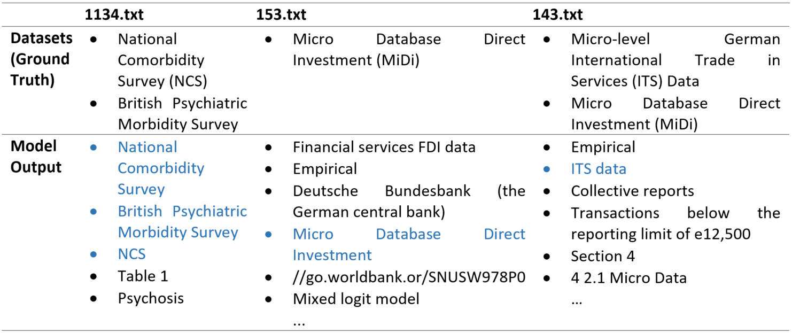

Chapter 7 - Finding datasets in publications: The KAIST approach¶
author:
| Haritz Puerto-San-RomanIR & NLP LabKAISTDaejeon, South Koreaharitzpuerto94 @kaist.ac.krGiwon HongIR & NLP LabKAISTDaejeon, South Koreagch02518 @kaist.ac.krMinh-Son CaoIR & NLP LabKAISTDaejeon, South Koreaminhson @kaist.ac.krSung-Hyon MyaengIR & NLP LabKAISTDaejeon, South Koreamyaeng@kaist.ac.krbibliography:
‘bibliography.bib’ title: ‘Finding datasets in publications: The KAIST approach. Text Mining Using Question Answering’
Non-technical Overview¶
The KAIST’s approach for retrieving datasets is to generate questions about datasets like what is the dataset used in this publication? and use a machine-learning system that can read a publication and a question, and give the answer to it. This machine-learning system retrieves a list of candidate answers among which one of them should be the name of the dataset. To remove those wrong candidate answers, they proposed to filter them out by their entity types. For example, if the entity type of a candidate answer is organization, it is likely to be a dataset name because datasets are created by organizations.
For research field retrieval, they proposed to compare publications with Wikipedia articles to discover the research fields. First, they crawled Wikipedia articles that correspond to the list of research fields. Then, they retrieved the research fields of the publications by measuring the similarity between the papers and the crawled Wikipedia documents. For example, they crawled the Wikipedia article economic history which corresponds to the research field economic history. If the similarity between a publication and the article economic history is high enough, it is determined that the publication belongs to the research field economic history. They proposed to use TF-IDF as similarity measure, which is based on term frequency and document frequency, but others could be applied too.
For the research methods retrieval, they modeled the task as a named-entity recognition problem. They considered research methods as named entities, real-world objects that can be denoted with a proper name, and trained a machine learning model to identify and retrieve them.
Literature Review¶
Although Information Retrieval is a well-established research field, only a few attempts have focused on the task of dataset extraction form publications. [@ghavimi2016identifying] tackled this problem using heuristics and dictionaries but encountered several problems. Firstly, they gave too much weight to acronyms. For example, NYPD (New York Police Department) is detected as a dataset name. Secondly, they gave too much weight to the year of publication of the datasets because they assumed that dataset names are usually followed by the year of publication. However, this may only apply to Social Sciences publications. For example, Computer Science datasets do not appear followed by the publication year so this heuristic cannot detect all possible types of dataset mentions.
What did you do¶
In this section, a detailed explanation of the used models for dataset names, research field, and research methods retrieval is provided.
Datasets Retrieval¶
The followed approach to retrieve dataset names is based on Machine Reading Question Answering (MRQA). First, given a publication, a list of candidate paragraphs in which the dataset is mentioned is selected. Then, using a query generation module, a specific query for each paragraph is created. After that, each pair of paragraph-query is input into the MRQA model. This model creates a list of candidate answers that is further processed using a feed-forward neural network. This network takes as input pairs of candidate answers and their entity types. The types of the answer candidates are obtained using an entity typing module. The output of this feed-forward neural network is the final list of dataset names found in the publication. Figure 7.1 shows an overview of the pipelined system. In the following subsections, the MRQA, query generation, and entity typing models are explained in detail.
image
Figure 7.1: Overall architecture for dataset retrieval
Document QA¶
MRQA models are neural networks that find answers for given queries according to a text. These answers must appear explicitly in the text. Since the dataset retrieval task is about finding explicit dataset mentions from publications, MRQA models are suitable for this task.
The MRQA model used in this work is Document QA [@clark2017simple]. It uses Bi-GRU, bi-attention, and self-attention mechanism. In addition, Document QA performs a paragraph selection that pre-filters and selects the k most relevant paragraphs using TF-IDF similarity between the query and paragraphs of the text. The model was trained on SQuAD v1.1, a common dataset to train MRQA models [@rajpurkar2016squad]. For details about the implementation and computing resources to train it, they refer to the original publication.
The KAIST team had the hypothesis that MRQA models do not need the full publication to find datasets. Rather, the MRQA models only need to process the paragraph where the answer appears. Among the literature of MRQA, the model used in this work stands out because of its paragraph selection stage. Using this model, it is possible to select a list of candidate paragraphs where the answer may appear, and then use the MRQA model to process them and retrieve the datasets.
Query Generation Module¶
Queries that are suitable for finding datasets are required to utilize an MRQA model for the dataset retrieval task. However, defining a general query for retrieving datasets is not trivial, since the dataset mentions appear in various forms like surveys, datasets, or studies. Therefore, they devised a query generation module to generate multiple specific queries instead of a single general query.
To create a list of important query terms that the queries should include, they used a query generation model proposed by [@yuan2017machine] that creates a query given a text and an answer. All the queries generated by this model are too specific and cannot be used for other publications or other dataset names. However, they can be utilized to create a list of query terms to generate more specific queries for other publications. To create this list, they extracted query terms that are frequent in the list of queries and at the same time are not frequent in sentences that do not include a mention to a dataset. Because of this, these query terms have the discriminative power to retrieve dataset mentions since 1) queries are generated to extract mentions and 2) the query terms do not appear in the sentences without dataset mentions. This list is used two times in their pipelined system. First, concatenating the first k query terms a general query is built. This query is employed by the paragraph selection stage of Document QA, as shown in Figure 7.1. Then, the query generation module generates specific queries for each paragraph concatenating the query terms that appear in the paragraph and on the list.
Entity Typing Model¶
Ultra-Fine Entity Typing [@Choi:2018:ACL] can predict a set of free-from phrases like criminal or skyscraper given a sentence with an entity mention. For example, in the sentence: Bob robbed John and he was arrested shortly afterward, Bob is of type criminal. In the task of the present book, candidate answers proposed by the MRQA model and the sentence in which they appear are input into Ultra-Fine Entity Typing. This system can predict 10k different entity types among which dataset is included. However, after a few experiments, they observed that most of the entity types obtained from the dataset names are not dataset but organization, agency, and similar types. This is due to the fact that datasets are usually created by organizations and thus, they include the name of the organization in the name of the dataset. Since these entity types are consistent, it is possible to use them as a feature for their candidate answer classifier. In this work, the KAIST team used the pre-trained model that was released with the original publication. For details about the implementation and computing resources to train it, they refer to the original publication.
Candidate Answer Classifier¶
Using the score given by the MRQA model for each candidate answer and the entity types given by the Entity Typing model for each candidate answer, a neural network classifier that filters the wrong candidate answers provided by the MRQA model is used. The intuition of this classifier is that a candidate answer with a high score given by the MRQA model and whose entity type is organization or something similar is highly likely to be a correct dataset name. Due to this pattern, they were able to create a neural network classifier to filter out candidate answers.
The classifier has the following architecture:
Input size: 10332 (10331 labels from Ultra-Fine Entity Typing and one from the Document QA score)
1 hidden layer with 50 neurons
Output size: 2
The training set consists of 25172 examples and the test set of 6293 examples obtained from the training set provided by the competition. To train the network, Adam optimizer was used with cross entropy as the loss function.
Research Fields Retrieval¶
Their approach to obtain research fields is based on comparing the publications with Wikipedia articles using TF-IDF similarity. First, using the list of research fields provided by the competition, a set of Wikipedia articles about different research fields was obtained using the Python library MediaWiki. The list provided by the competition has three levels of hierarchy as shown in the example (Figure 7.2). The leaf nodes of that hierarchy were searched in Wikipedia to retrieve specific research fields instead of general ones. For example, they were aiming to retrieve Neurosurgery instead of Medicine. Then, using Scikit-learn [@scikit-learn], a TF-IDF matrix of all the publications and Wikipedia articles of research fields were computed. The research field and all its superior nodes in the hierarchy associated with the Wikipedia article most similar to the publication were returned along with the similarity in the range [0,1]. The overall architecture can be seen in Figure 7.3.
 Research fields hierarchy[]{label="fig:researchfieldshiearchy"}Figure 7.2: Research fields hierarchy
Research fields hierarchy[]{label="fig:researchfieldshiearchy"}Figure 7.2: Research fields hierarchy
 Overall architecture for research fields retrieval[]{label="fig:researchfields"}Figure 7.3: Overall architecture for research fields retrieval
Overall architecture for research fields retrieval[]{label="fig:researchfields"}Figure 7.3: Overall architecture for research fields retrieval
Research Methods Retrieval¶
For the research methods retrieval task, they modeled it as a named-entity recognition (NER) problem. Research methods are considered to be named entities and because of this, they can be tagged as research method label (RS) instead of common NER labels such as location, and people. Figure 7.4 shows the main architecture of the model proposed by [@lample2016neural] and used in this task.
 BiLSTM-CRF architectureFigure 7.4: Paragraph selection for DocQA in research method retrieval
BiLSTM-CRF architectureFigure 7.4: Paragraph selection for DocQA in research method retrieval
The representation of a word using the model is obtained considering its context. The KAIST team had the assumption that research methods have dependencies and constraints with words that appear in their surrounding context. Therefore, the conditional random field [@lafferty2001conditional] layer in this model is suitable for detecting research methods by jointly tagging the whole sentence, instead of independently tagging each word.
For this task, the research method phrases that appeared in the training set were marked using as reference the list of research methods provided by the competition. Then, the training set was represented in CoNLL 2003 format [@tjong2003introduction], using IOB tag (Inside, Outside, Beginning) to train the model. Every token was labeled as B-RS if the token is the beginning of a research method, I-RS if it is inside a research method but not the first token, or O otherwise. Training the model took approximately one day using a CPU AMD Ryzen 7 2700, a GPU Nvidia GeForce GTX 1050 Ti, and 8GB RAM.
What worked and what didn’t¶
The KAIST team tried different ideas to extract dataset names. First, they tried to extract the dataset names using hand-crafted queries in the MRQA model. However, they noticed that these manually generated queries do not have sufficient discriminative power. Therefore, they tried to generate a general query with enough discriminative power to retrieve datasets’ names. To this end, they converted the sentences containing the dataset into queries and then clustered the converted queries to get general queries. However, they found that each of the resulting clusters did not reflect the semantics of the desired general queries. Hence, they had to create specific queries for each publication as explained in the previous section. These specific queries helped to increase the recall but at the same time affected negatively to the precision. The use of entity typing worked well to remove the wrong candidate answers proposed by the MRQA model. Thanks to this entity-type filtering, they were able to improve the recall using the query generation module without sacrificing the precision.
They also tried to use the section names as a feature for the paragraph selection module of Document QA. However, the use of section names degraded the overall performance. In their analysis, they stated that the heuristics that they used to extract them generated noise that affected the performance. For example, total, variable, and funding were detected as section names but clearly, they are not.
Finally, their idea to compare publications with Wikipedia articles to retrieve research fields yielded successful results. But on the other hand, their first idea to retrieve research methods was not successful. It was based on identifying the context words of the research methods by using the frequency of those words. The reason for the bad performance was due to the lack of discriminative power of the most common words that co-occur with the research methods. Therefore, they tried to model it as a NER problem, where they consider each research method that appeared in a publication as a named-entity. By modeling the problem in this way, they could use existing NER models to extract research methods from publications. However, this approach did not achieve satisfactory results either.
Summary of your results and caveats¶
Due to the difficulty of performing a quantitative analysis on a not extensively labeled dataset, a qualitative analysis was made. Several random publications were chosen and manually labeled to check the quality of the model and discover the strong and weak points.
Datasets Retrieval¶
To analyze the effects of the query generation module and entity typing module, they performed analyses on 100 publications from the dev set of the first phase using three different settings:
Document QA only
Document QA + Query Generation Module
Document QA + Query Generation Module + Entity Typing Module
Document QA only¶
Figure 7.5 shows the results from three publications from the list of analyzed publications using Document QA only. Compared to the other settings, Document QA only setting retrieves high-quality answers (dataset mentions). However, the number of retrieved answers is notably small. For example, the result from 153.txt publication is empty as shown in Figure 7.5. In fact, using this setting the model can only retrieve 260 answers (predictions) from the list of analyzed publications.
Results from Document QA only[]{label="fig:docqaonly"}Figure 7.5: Results from Document QA only. Right answers from the model in blue.
These results were expected due to the difficulty of defining general queries as explained in section Question Generation Module. Without a query generation module, it is hard to make a representative enough query to retrieve various forms and types of the dataset mentions.
Document QA + Query Generation Module¶
Figure 7.6 shows the results from three publications from the list of analyzed datasets using Document QA and the Query Generation Module. Because of the addition of the Query Generation Module, a larger number of answers were retrieved. For example, the result from 153.txt publication contains several answers including the right one, Micro Database Direct Investment. Therefore, this and the retrieval of more than 2,000 answers from the list of analyzed datasets proves that the Query Generation Module improves recall of the entire dataset retrieval model. On the other hand, compared to the Document QA only setting, there is a considerable amount of wrong candidate answers. For instance, in Figure 7.6, empirical, Table 1, and Section 4 are not dataset mentions.
Results from Document QA + Query Generation Module[]{label="fig:docqaquery"}Figure 7.6: Results from Document QA + query generation module. Right answers from the model in blue.
They believe that the reason for this noise is that some query terms may cause the retrieval of wrong answers. For example, the query term study can help to retrieve dataset mentions such as ANES 1952 Time Series Study. However, this term can also retrieve wrong answers such as empirical study. These types of query terms are still needed to retrieve various forms and types of dataset mentions but clearly generate noise.
Document QA + Query Generation Module + Entity Typing Module¶
Figure 7.7 shows the results of the analyzed publications using Document QA, the Query Generation Module, and the Entity Typing Module. Although the Entity Typing Module might not remove all the wrong answers caused by the Query Generation Module such as 4 2.1 Micro Data, most of them are successfully removed and thus, the overall precision is improved. Using this setting the model retrieves 526 answers (predictions) from 100 publications from the dev set of the first phase of the competition.
Results from Document QA + Query Generation Module + Entity Typing Module[]{label="fig:docqaqueryentity"}Figure 7.7: Results from Document QA + query generation module + entity typing module. Right answers from the model in blue.
Research Fields Retrieval¶
They randomly selected 20 publications from the training set of the first phase. They can test their model using the training set because the model does not require any training phase. The model was able to predict research fields correctly for 11 of those publications. The strongest point is that the model is able to predict research fields that are significantly specific such as Home health nursing management. Among the weak points of the model, it has problems when two research fields are similar or share subtopics. Moreover, sometimes it fails due to the fact that it tries to retrieve excessively specific fields while more general ones would be suitable.
Research Methods Retrieval¶
20 random publications were selected and labeled from the training set of the second phase and the results are not satisfactory. The model is able to find proper research methods for 12 publications out of 20. For example, the model successfully detects the research method of the publication with id 15359, Factor analysis. However, the results contain a significant amount of noise. For example, the model retrieves for the document with id 10751 several wrong answers like Reviews describe, Composite materials, and Detailed databases.
Lessons learned and what would you do differently¶
After the completion of this project, the KAIST team realized that some steps could have been in a different way and would have led to better results. For example, they focused a lot on the model creation, but they could have spent more time on the analysis of the dataset to extract all its potential and search for additional datasets to alleviate the noise of the provided dataset.
In addition, since Document QA is good for prototyping, it was a good idea to use it at the beginning to check that their hypothesis of modeling dataset retrieval as a Question Answering task was right. However, at some point during the project, they should have changed it to another model with state-of-the-art performance. Also, they use symbolic queries for the MRQA model. But since they are generating specific queries for each publication, it should be possible to define and generate queries in the form of embeddings. This could help to improve even more the recall boost provided by the Query Generation Module and at the same time avoid the generation of noise. Furthermore, for research fields, other ranking methods should have been tried like BM25, a ranking function used by search engines whose performance is better than TF-IDF. Finally, for research methods, they should have analyzed more the dataset to use more suitable techniques such as unsupervised NER instead of supervised NER.
Conclusion¶
The KAIST team proposed to model the dataset retrieval task as a Question Answering task. This is a unique approach in this competition and led to successful results as shown in the analysis. This approach is flexible because it allows the retrieval of new datasets that are not in the training set. In addition, the model does not require to be trained on a dataset discovery task. They achieved good results even though they used a pre-trained model on SQuAD, a dataset for Question Answering using Wikipedia pages. Their approach to retrieve research fields is simple, fast to compute, and powerful. It can retrieve specific research fields with high precision. On the other hand, the proposed approach to retrieve research methods did not achieve as good results as the other task. The main problem was that they did not tackle the noise problem in the dataset.
What comes next¶
This work is the very first step of the Coleridge Initiative to build an “Amazon.com” for data users and data producers. The next step is to construct a system that recommends datasets to researchers. The KAIST team has the hypothesis that datasets depend on research fields and vice versa. For example, in the research field Question Answering, a subfield of Natural Language Processing and Computer Science, the most commonly used dataset is SQuAD [@rajpurkar2016squad]. Therefore, according to their hypothesis, two publications using SQuAD are presumably to be in the same field, Question Answering. Based on this hypothesis, it would be possible to build hierarchical clusters of publications with the same research field. In this way, a cluster will have publications with the same research field and similar datasets. As an example, the QA cluster will have papers about QA and those papers will use similar datasets like SQuAD and TriviaQA [@joshi2017triviaqa]. With these clusters, the system will be able to recommend datasets to data users. For example, if a publication is in the Question Answering field, the proposed system would be able to recommend the authors SQuAD and TriviaQA. Moreover, it would be able to recommend to data producers fields with a lack of datasets.
In addition, there is room for improvement in the models they proposed. For example, since they used a pre-trained model in Document QA, they think they did not exploit the whole potential of this system, so they would like to train the model using a big enough training set of publications.
Acknowledgments¶
This work was supported by the Institute of Information & Communications Technology Planning & Evaluation (IITP) grant funded by the Korean Government (MSIT) (No. 2013-0-00179, Development of Core Technology for Context-aware Deep-Symbolic Hybrid Learning and Construction of Language Resources) and Next-Generation Information Computing Development Program through the National Research Foundation of Korea (NRF) funded by the Ministry of Science, ICT (2017M3C4A7065962).
Appendix: Description of the code and documentation¶
The technical documentation of the code is provided in the GitHub repository of the project https://github.com/HaritzPuerto/RCC/tree/master/project